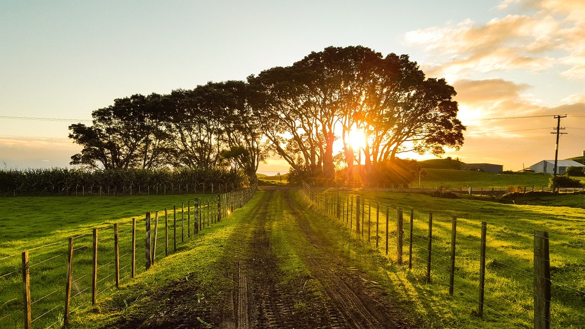
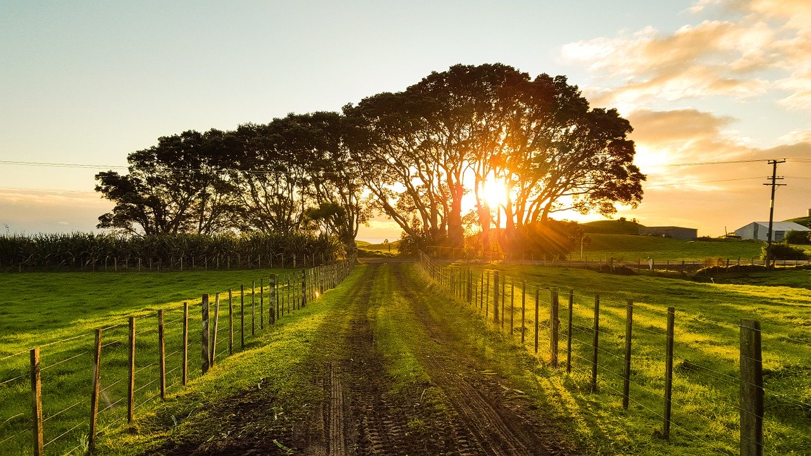
 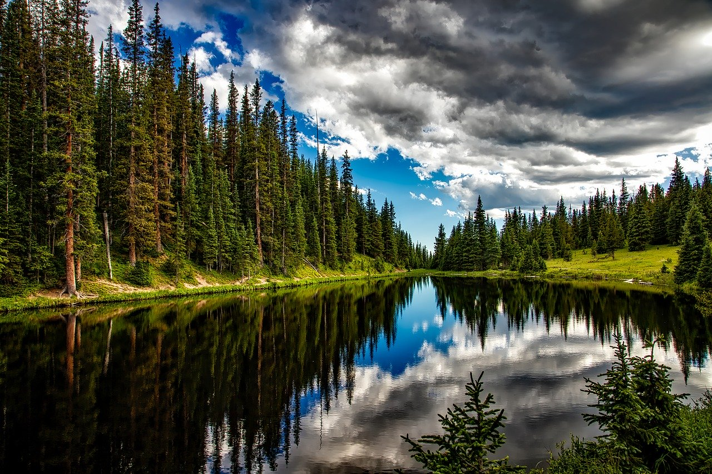
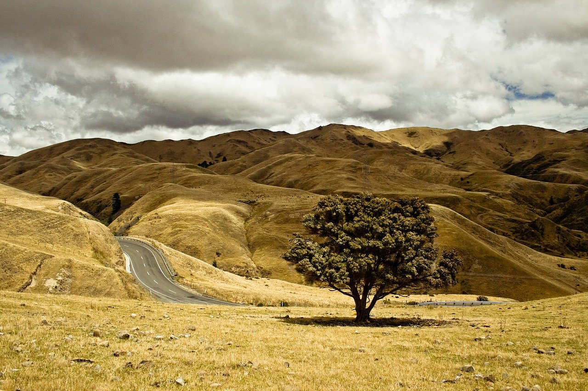
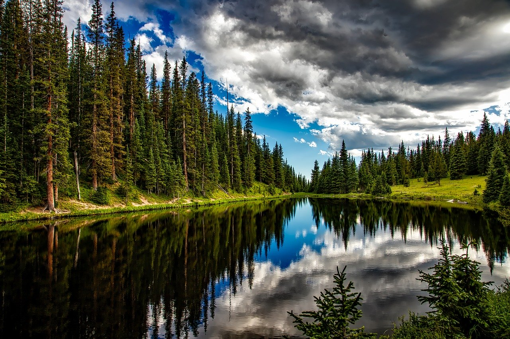
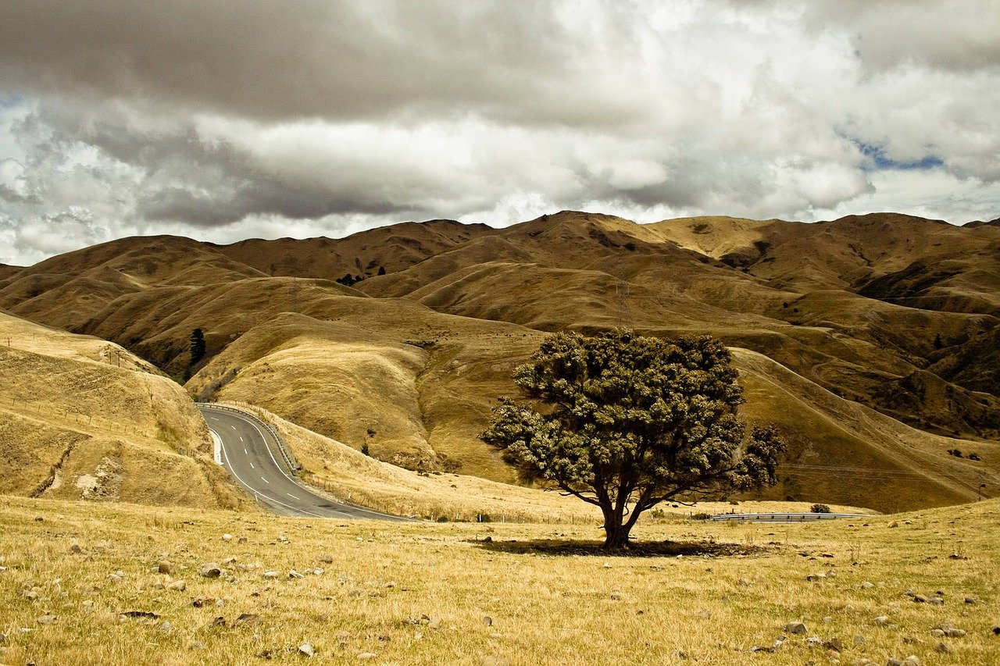
John Smith : The Country Man
Being a photographer is first and foremost a passion. The one in the photo. Being a professional photographer also means having the rare privilege of being able to live from your passion. From film, I went digital, from color I evolved into light… In all its states, soft and homogeneous, white and hard, direct or reflected, subdued, low, blue… I see it everywhere , even in a shadow.
 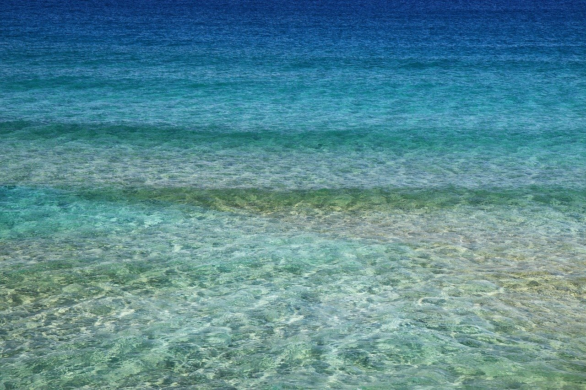
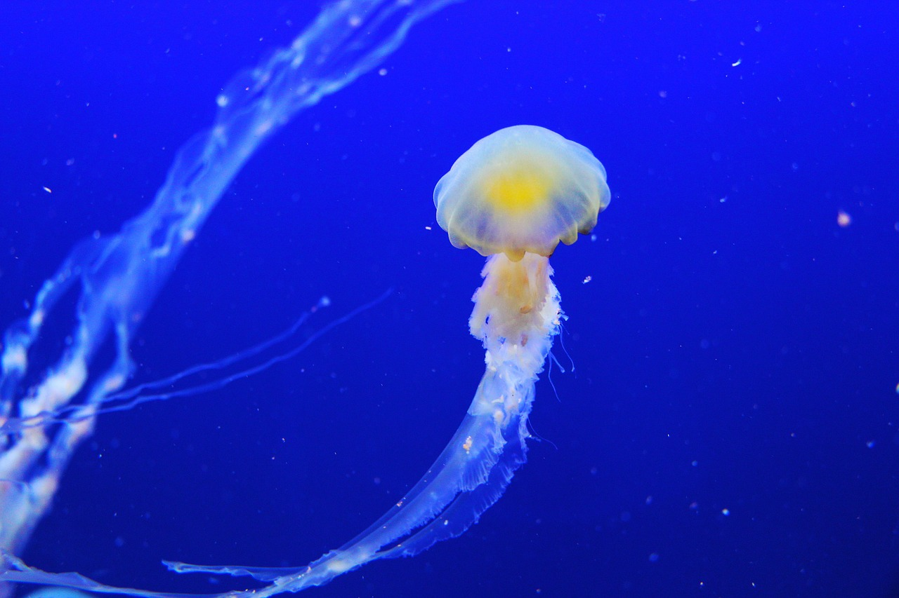
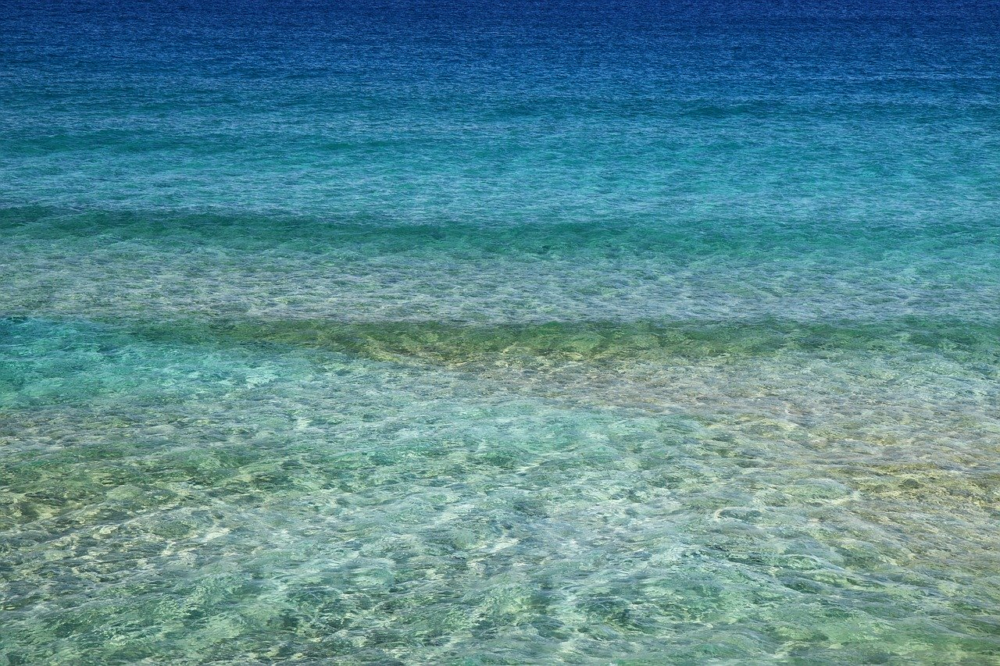
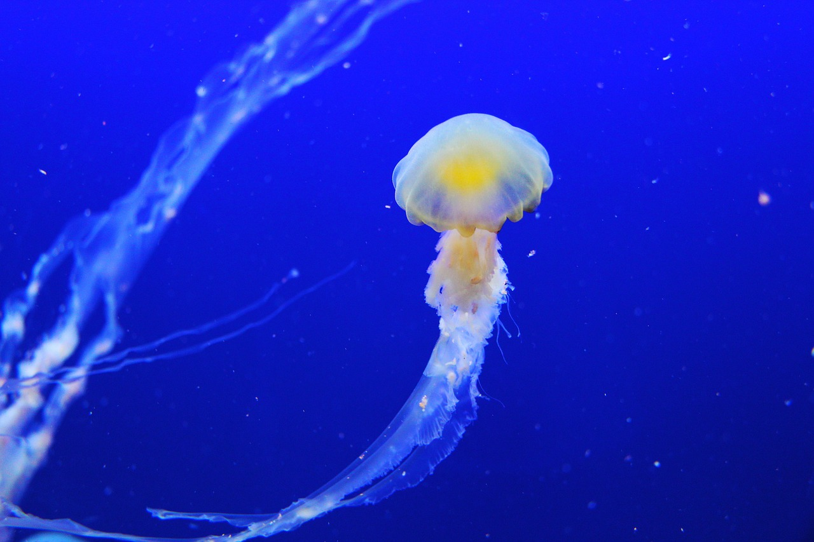

 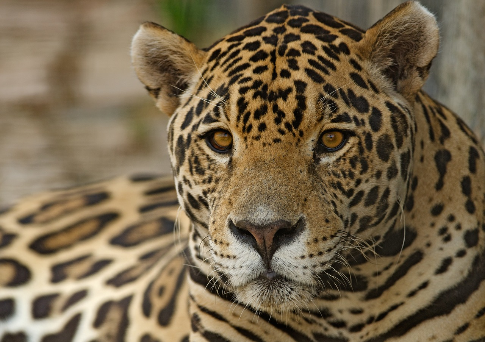
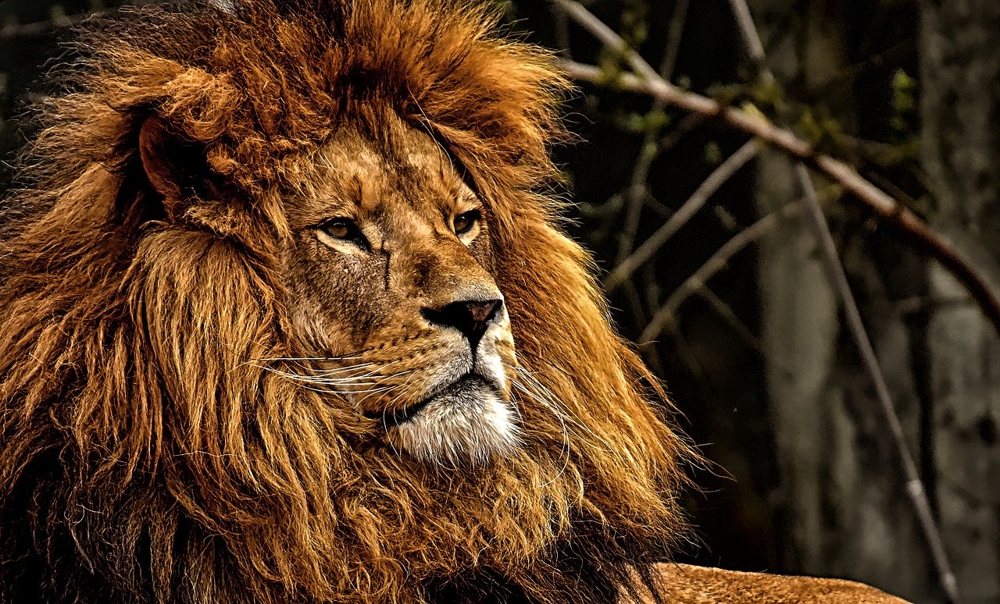
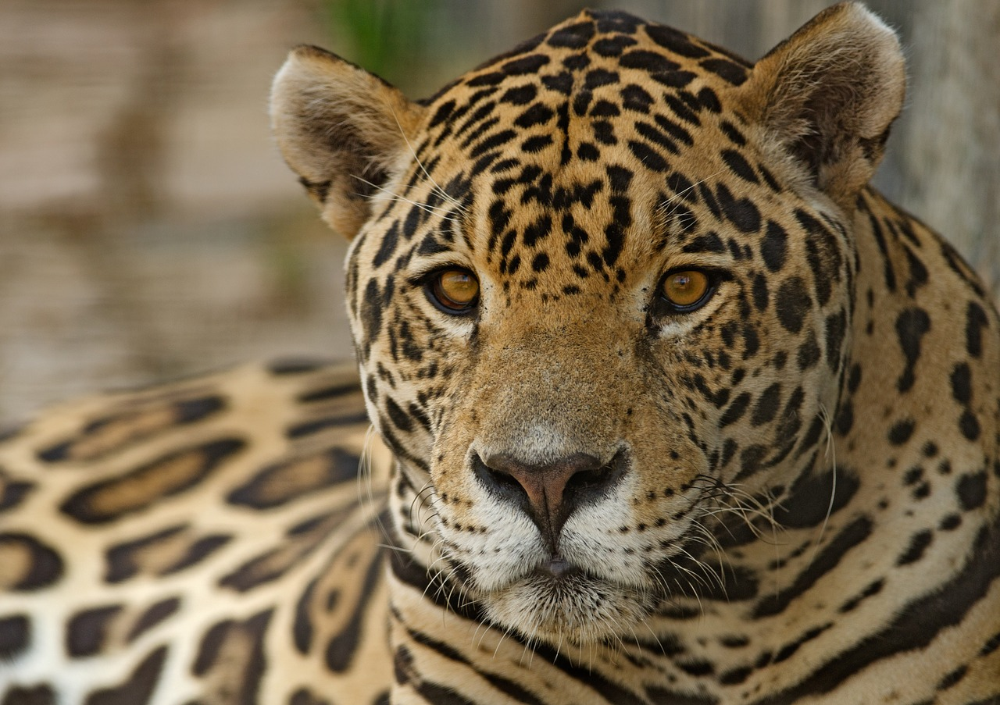
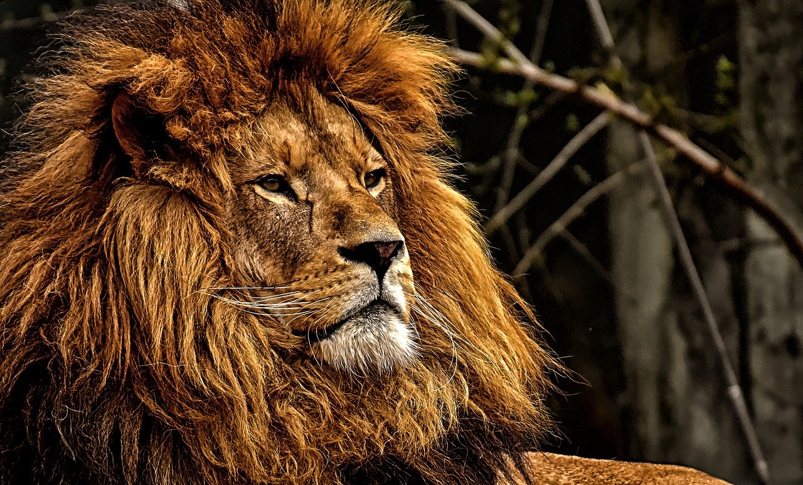